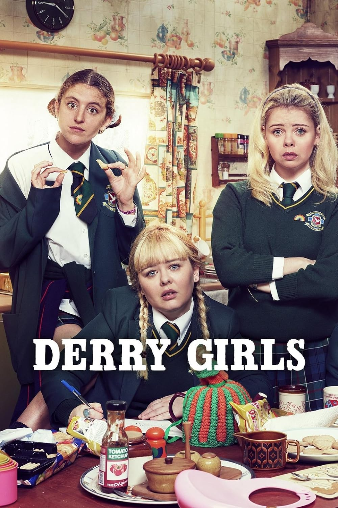
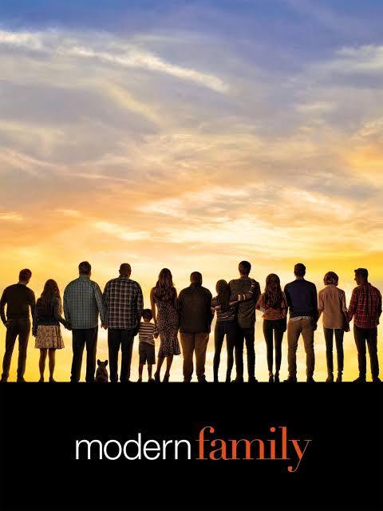
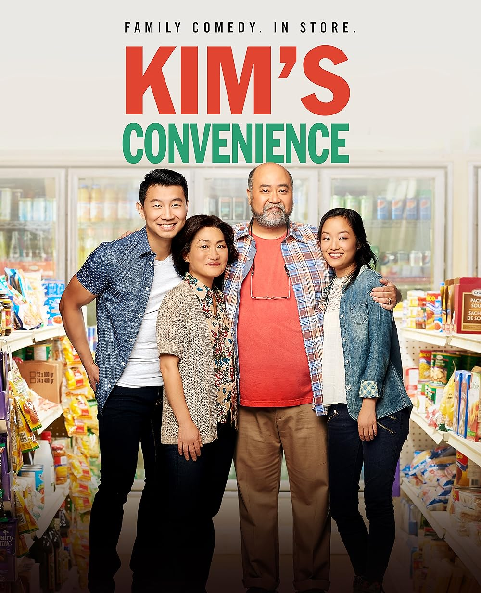

Friends (1994-2004)

Follows the personal and professional lives of six twenty to thirty year-old Friends living in Manhattan, New York City.


Derry Girls (2018-2022)
The personal exploits of a 16-year-old girl and her family and friends during the Troubles in the early 1990s in Northern Ireland.

Modern Family (2009-2020)
Three different, but related, families face trials and tribulations in their own uniquely comedic ways.

The Good Place (2016-2020)
Four people and their otherworldly frienemy struggle in the afterlife to define what it means to be good.
kims-convenience (2016-2021)
The misadventures of a Korean-Canadian family running a convenience store.